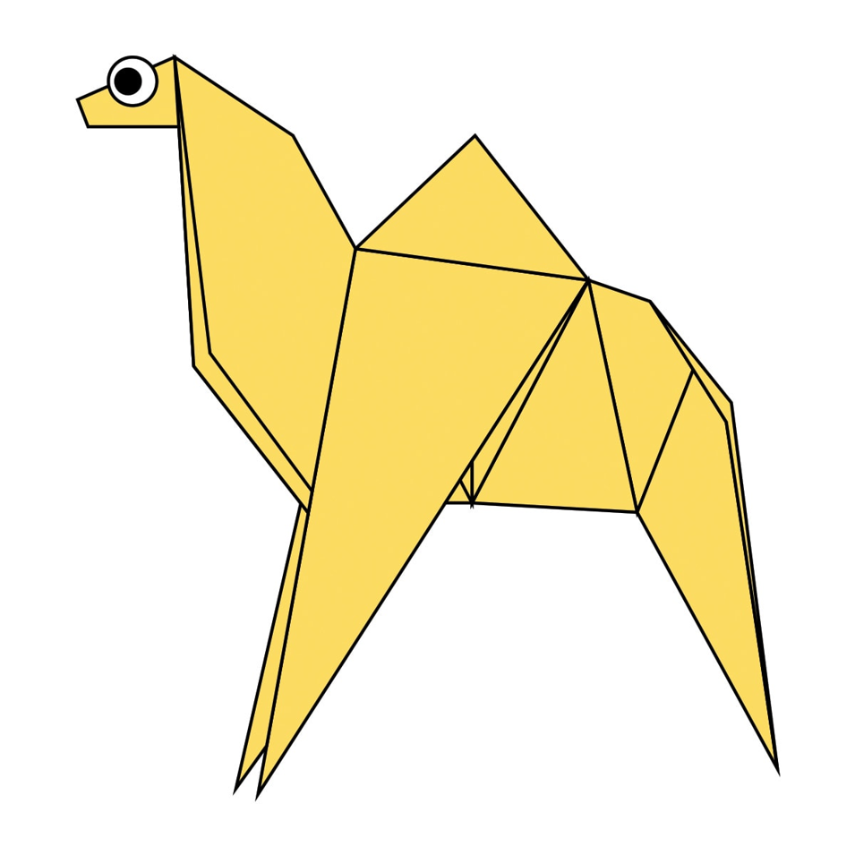
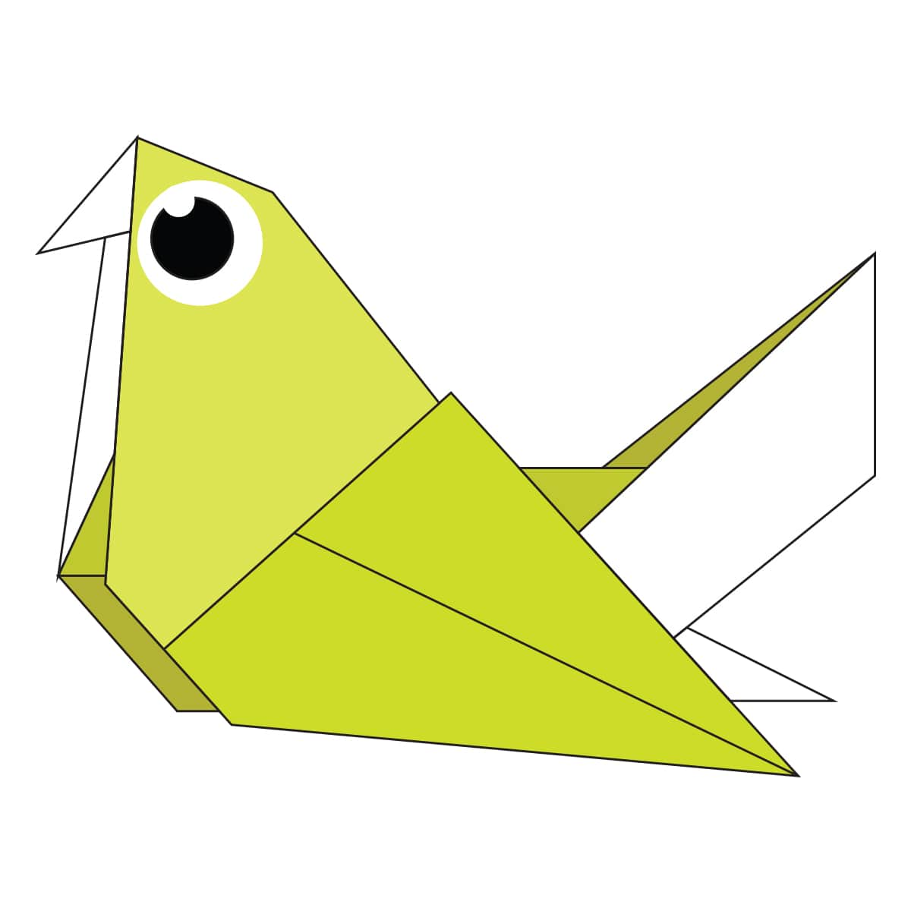
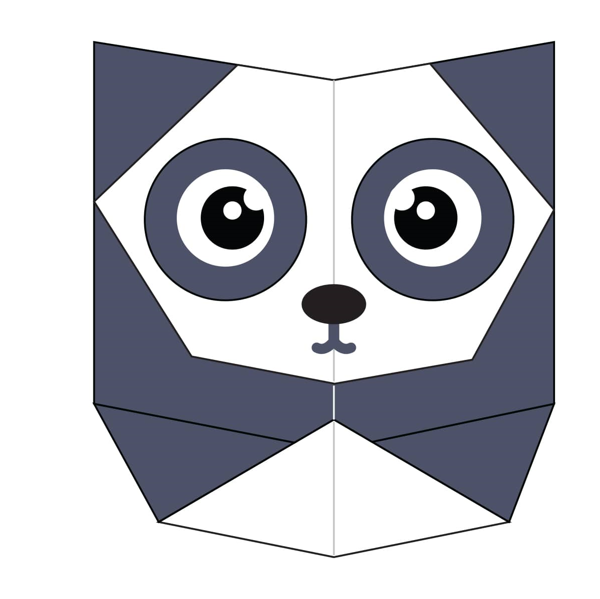
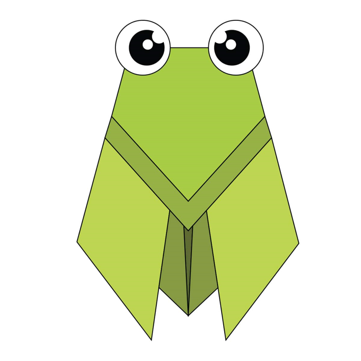

By Shriya:
Oragami Designs
About Us
Follow us
Origami Camel

Camels are mammals with long legs, a big-lipped snout and a humped back.
There are two types of camels: dromedary camels, which have one hump, and Bactrian camels, which have two humps.
Camels' humps consist of stored fat, which they can metabolize when food and water is scarce.
Oragami Chameleon
 These colorful lizards are known as one of the few animals that can change skin color.
However, it is a misconception that chameleons change colors to match their surroundings
These colorful lizards are known as one of the few animals that can change skin color.
However, it is a misconception that chameleons change colors to match their surroundings
Oragami Pigeon

PIGEON: Pigeons are gentle, plump, small-billed birds with a skin saddle (cere) between the bill and forehead.
Because of their long wings and powerful flight muscles, they are strong, swift fliers.
Oragami Teddy Bear
 A teddy bear is a stuffed toy in the form of a bear. The teddy bear became a popular children's toy, celebrated in story, song, and film.
Since the creation of the first teddy bears which sought to imitate the form of real bear cubs, "teddies" have greatly varied in form, style, color, and material.
A teddy bear is a stuffed toy in the form of a bear. The teddy bear became a popular children's toy, celebrated in story, song, and film.
Since the creation of the first teddy bears which sought to imitate the form of real bear cubs, "teddies" have greatly varied in form, style, color, and material.
Oragami Panda

It is characterised by its bold black-and-white coat and rotund body.
The name "giant panda" is sometimes used to distinguish it from the red panda, a neighboring musteloid
Oragami Flying Cicada

Cicadas can be black, brown or green and can have red, white or blue eyes.
Their wings are transparent and can seem rainbow-hued when held up to a light source